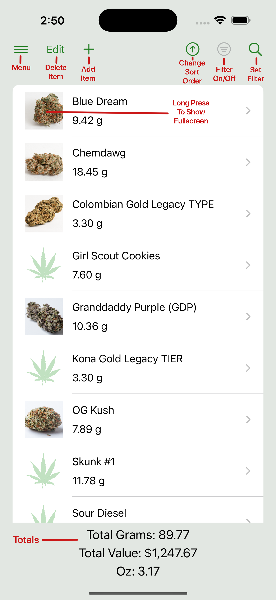

Documentation Index
This page will grow to include detailed documentation for WeedTracker features. Below is a placeholder index of topics.
- Getting Started
- Adding and Managing Inventory
- Searching and Sorting
- Viewing Your Usage History
- Customizing Tier Levels and Types
- Exporting and Importing Data
- iCloud Sync and Multi-Device Use
- FAQ and Troubleshooting
Getting Started
Welcome to WeedTracker! This guide will walk you through the basics of setting up your inventory. As you add, adjust, or remove items, the app automatically builds a complete history of your usage — no extra steps required.
1. Add Your First Strain
Tap the + button to add a new item to your inventory. You can give it a name (e.g., “Blue Dream”), and enter the cost and quantity. Optionally, you can assign a tier (like “Premium” or “Budget”), select a type (e.g., Flower, Concentrate, Edible), and even attach an image for quick visual reference.
2. Customize Tier Levels and Types (Optional)
WeedTracker lets you define your own tiers and item types to match the categories used by your local dispensaries. These can be managed from the Settings screen, and any changes will apply automatically across your inventory.
3. Inventory Adjustments Are Automatically Tracked
Whenever you create a new strain, restock an item, use something from your inventory, or delete a strain entirely, WeedTracker automatically logs the change as a transaction. These transaction records form your usage history — no need to manually log anything.
You can view each transaction's details, including the date, amount changed, new totals, and any notes you added. This helps you keep an accurate history of your habits and inventory movement over time. You can access your usage history from the App main menu.
4. View Usage History
Choose View History from the main menu to see a log of all your automatically recorded transactions. You can filter the list by transaction type, date range, or keyword match across strain names and notes, making it easy to find what you're looking for.
The history view gives you a clear, scrollable record of all changes to your inventory, including the date, action taken, quantity adjusted, and any notes entered at the time.
5. Set Low Stock Warnings
You can set a low stock warning threshold from the App Options screen, available in the main menu. Once enabled, WeedTracker will alert you when your total inventory level drops below that quantity.
This helps you stay on top of your supply without the need to constantly check levels manually — a simple way to avoid running out unexpectedly.
6. iCloud Sync & Backups
Your data is stored privately on your device and can sync across all your Apple devices using iCloud (if enabled). You can also export your data as text or CSV files and import it later, ensuring you always have access to your records.
See the screen shots below for an overview of the main inventory functionality.
Inventory View (iPhone)
On iPhone, the main inventory screen shows your strains in a single-column list. Tap the + button in the top-right to add a new item.
Inventory View (iPad)

On iPad, the main view uses a two-column layout: the list appears on the left, and the selected item’s details appear on the right.
Adding and Managing Inventory
To add a new item to your inventory, tap the + button. A form will appear where you can enter details like the strain name, quantity, cost, product type (such as Flower or Concentrate), and tier (e.g., Premium, Budget). You can also attach an image if you’d like a quick visual reference.
To update an existing item, simply select it from the list. From the detail view, you can:
- Tap Add to increase the quantity
- Tap Remove to decrease it (e.g., for usage or disposal)
To delete an item, either:
- Tap the Edit button in the list view to reveal delete options, or
- Swipe the item to the left and tap Delete — this uses standard iOS swipe-to-delete behavior
Each of these actions automatically creates a transaction history entry, so your usage is always tracked in the background.
All changes are saved automatically — there’s no need to press a Save button.
When adding or removing stock in common increments, you may use the built-in fraction picker to quickly select standard ounce-based amounts like 1/8, 1/4, or 1 oz. WeedTracker will automatically convert these to grams.
Fraction Picker

Use this menu to quickly add or remove common increments like 1/8, 1/4, or 1 ounce.
List Edit Mode

Tapping the Edit button reveals delete controls for each item. You can also swipe an item to delete it using standard iOS gestures.
Searching and Sorting
WeedTracker includes flexible filtering and sorting tools to help you quickly find what you need. These tools work consistently across the app, though the available filter options vary depending on the view.
You can filter your data by a variety of fields — such as name, quantity, type, tier, cost, or rating — depending on the context. For numeric fields like quantity and cost, you can choose a comparison (greater than, less than, equal to) to help narrow results. For tier and type fields, you can select multiple values using the “Add” button.
You can also enter freeform text to search by name or notes, and filter by date range (in the View History and Export History views).
Once filters are applied, only matching results will be shown. You’ll also see a compact summary of the filters currently in effect. You can temporarily hide or show the filtered list using a toggle, or clear all filters at once to reset the view.
Sorting lets you reorder the results by name. You can toggle ascending or descending order with a tap.
These tools are available in the following places:
- Inventory view – filter and sort your current items
- View History – filter and sort past transactions
- Export History – filter and sort which transactions to export
- Export Inventory – always exports your full inventory; filtering and sorting are not applicable
Inventory Filters Panel

Use the filter panel to search, apply filters, or sort inventory items alphabetically by name.
Choose Comparison Operator

When filtering by a numeric value such as cost or quantity, tap to choose a comparison operator: greater than, less than, or equal to.
Add Tier Picker

Tap the “Add” button to select a tier or type from your defined options. You can add multiple filters in each category.
Viewing Your Usage History
[Placeholder content]
Customizing Tier Levels and Types
[Placeholder content]
Exporting and Importing Data
[Placeholder content]
iCloud Sync and Multi-Device Use
[Placeholder content]
FAQ and Troubleshooting
[Placeholder content]